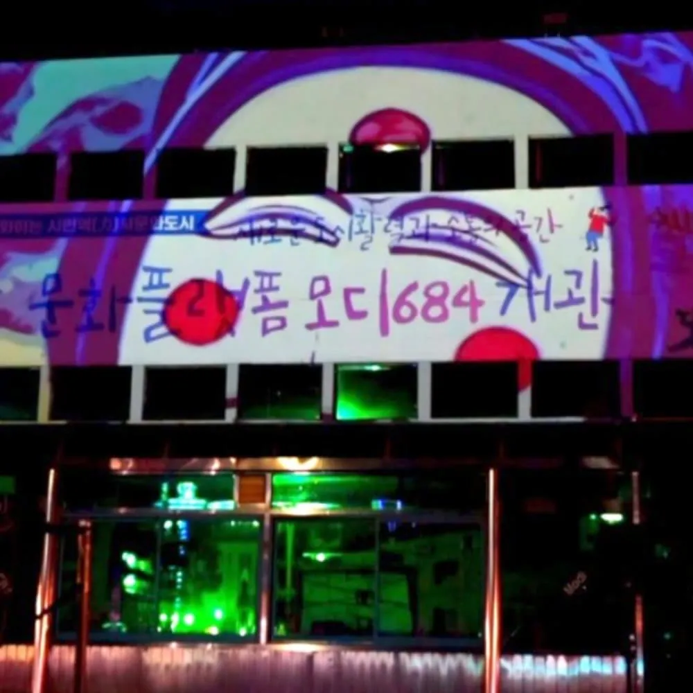
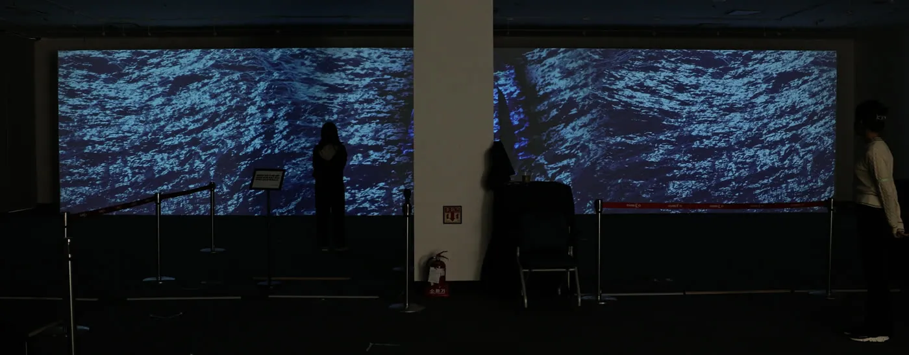

미디어파사드는 건물 외벽이나 전시장 벽면을 하나의 큰 화면으로 쓰는 방식입니다. 빔프로젝터 영상을 창·기둥·굴곡에 맞춰 변형해 붙이는데, 이를 프로젝션 매핑이라 합니다.
오늘은 봄날은 대구광역시 수성구의 여성기업이자 미디어아트 AX 기업입니다. 콘텐츠도 코드로 직접 만듭니다.



- STEP 01
현장 실측
벽면 크기·굴곡, 주변 조도, 관람 동선, 전기 용량을 재서 프로젝터 대수·밝기·위치를 정합니다.
- STEP 02
매핑 설계
창·기둥·간판을 피해 영상 면을 잡고, 벽면 형태대로 마스크를 만듭니다.
- STEP 03
콘텐츠 제작
매핑 면 규격대로 코드로 제작해 비율이 바뀌어도 다시 출력합니다. 시안 3종은 1주일 이내 제시합니다.
- STEP 04
설치 · 상영 운영
설치·매핑 후 상영합니다. 야외는 일몰 시각에 맞춰 운영하고, 기간 행사는 철거까지 맡습니다.
Where
어떤 현장에 맞나요?
| 건물 외벽 야간 상영 | 축제·개관 행사·야간 관광. 안동 문화플랫폼 모디684, 구미 썸머나잇 페스티벌 사례. |
|---|---|
| 전시장 벽면 | 양면 벽 대형 프로젝션. 관람 동선에 맞춰 밝기·재생 속도를 조정합니다. 경북교육청 구미코 전시 사례. |
| 실내 대형 벽면 | 로비·홀처럼 벽은 넓지만 화면 설치가 어려운 공간. 부산 서구청 송도 사례. |
| 맞지 않는 경우 | 낮에도 켜 두거나 프로젝터 거리가 안 나오는 현장은 LED 패널·전광판 설치가 맞으며, 실측 때 먼저 말씀드립니다. |
FAQ
자주 묻는 질문
발주 전에 가장 많이 묻는 내용입니다.
미디어파사드란 무엇인가요?
미디어파사드는 건물 외벽이나 전시장 벽면에 빔프로젝터 영상을 맞춰 붙여(프로젝션 매핑) 하나의 큰 화면으로 쓰는 방식입니다. 건물을 그대로 두고 밤에만 화면으로 쓰므로 축제·개관 행사·야간 관광 콘텐츠에 주로 쓰입니다.
미디어파사드와 LED 전광판은 무엇이 다른가요?
미디어파사드는 빔프로젝터로 벽에 쏘고, LED 전광판은 화면 자체를 설치합니다. 미디어파사드는 건물을 손대지 않아 설치·철거가 빠르고 큰 면적에 유리하지만 어두워야 잘 보입니다. LED 전광판은 낮에도 보이고 상시 운영에 강하지만 구조 보강과 전기 공사가 따릅니다. 두 방식 모두 시공합니다.
대구에서 미디어파사드 업체를 찾고 있습니다. 시공 지역이 어떻게 되나요?
대구·경상북도를 우선으로 부산광역시·경상남도·울산광역시까지 시공하며, 그 외 지역은 협의합니다. 사업장이 대구 수성구라 대구 안에서는 실측·시공·현장 대응을 당일 처리합니다.
빔프로젝터는 몇 대가 필요한가요?
벽면 크기, 주변 조도, 프로젝터를 놓을 거리에 따라 정해집니다. 실측에서 가로등·간판 밝기, 관람 동선, 전기 용량까지 재서 대수·밝기·설치 위치를 정하고 견적서에 반영합니다.
축제 기간에만 며칠 운영하는 것도 가능한가요?
가능합니다. 설치·상영 운영·철거를 함께 맡고, 야외는 일몰 시각에 맞춰 상영합니다. 구미 썸머나잇 페스티벌, 안동 문화플랫폼 모디684 개관이 그런 현장입니다.
공공기관 발주에 필요한 서류가 준비되어 있나요?
네. 여성기업 확인서, 직접생산확인증명서(동영상제작서비스), 비디오물제작업 신고증, 방송영상독립제작사 신고증을 보유하며 사본은 문의 시 보내드립니다. 공공기관 우선구매 대상이며 중소기업자간 경쟁입찰에도 바로 참여합니다. 회계연도 기준 견적서는 요청 즉시 발행합니다.
그 밖의 문의는 010-4292-1999 또는 studio@publicbloom.art로 주세요. 접수 후 24시간 이내 연락드립니다.
현장 사진 한 장이면 검토가 시작됩니다
장소, 벽면 · 화면 크기, 일정을 알려주시면 실측 후 회계연도 기준 견적서와 여성기업 확인서 · 직접생산확인증명서를 함께 보내드립니다.